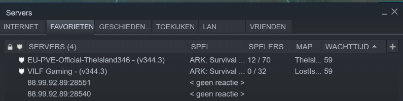

Probleem

Op de bovenste afbeelding kunt u mijn probleem zien, 3e server is de server die ik bij jullie heb aangeschaft en momenteel actief en werkend hoort te zijn.
De werkende servers zijn 2 random test servers(een is official en de andere niet) om te kijken of de fout bij mijn omgeving plaatsvind wat dus niet zo is
Hebben jullie een idee hoe deze fout veroorzaakt word? Vriendelijke Groet Ruben